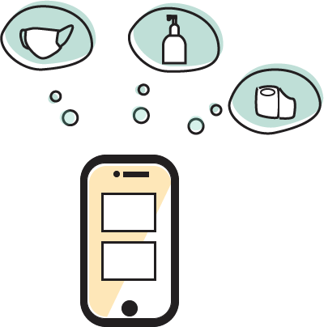
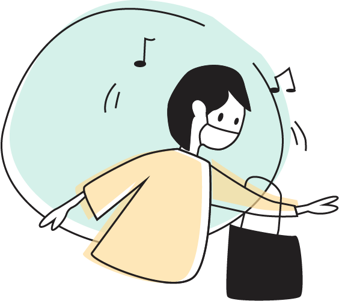
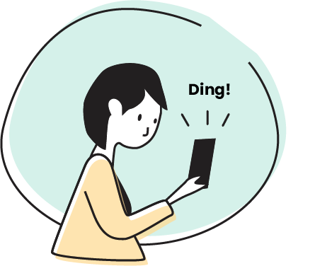
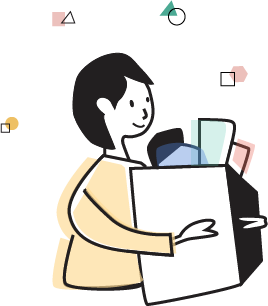

PROMPT
Keep people informed during COVID-19
This is a 7-day Hackathon held by the University of Michigan School of Information (UMSI) and participated by UMSI students. The prompt was to develope a tool/product/system that helps provide relevant information about COVID-19.
PROBLEM
How might we help shopping experience during the pandemic safer and more effective?
FINAL SOLUTION
Abby's eazibuy Experience

Explore stores nearby
Abby heard about eazibuy from a friend and decided to download it and explore. She signed up with her email and entered her home address. Soon enough, Abby saw a list of stores near her house. "Tom's Grocery is open today!" Abby opened Tom's Grocery's page and saw that she only needs to wait for 30 minutes around 12:30 PM. She thought "I am going there around 12:30 then!". Abby saw sanitizer at Tom's Grocery is out of stock but she added to her list so she can check back later.
Check the stock of items
Abby still wants to see what stores have sanitizer. She chose sanitizer and wipes and saw two stores have both items. "Oh forgot about bleach!" Abby went back and selected bleach. "Local Market has all of them!" Abby decided to go to Local Market instead of Tom's Grocery.



Personalized list and fact check
Abby is at the Local Market. According to eazibuy she only needs to wait for 15 minutes. While she was in the line waiting, she opened her eazibuy account and saw sanitizer and toilet are in her favorite list. "What's this?" Abby opened Fact Check, took a glance of the page and opened the first fact she saw. After reading through it, she thought "Now I know better what to do after buying grocery." She added the fact to her list so she wouldn't forget some of the tips.

Set up notification for out-of-stock items
"I forgot about masks!" Abby just realized she doesn't have many masks left at home. She quickly checked eazibuy and masks are not available at any store. She decided to set up notification so she could know which store within 3 miles of her house has masks re-stocked.



Happy Shopping 😊
After Abby finished her shopping at Local Market. Her phone just pushed her notification that masks are re-stocked at Tom's Grocery. "Yay! I got everything I wanted!" Abby felt great about her shopping experience!

IDENTIFY THE PROBLEM
What do people want to know?
To begin with, I started self-exploring as well as asking people around me what information do people
want to know about COVID-19. Then I quickly put up a simple affinity wall with the insights collected from people. Three categories of needs could
be identified:
1) get notified by the targeted news relevant to cities/towns where people live instead of bombarded by the news around the globe
2) grocery shopping guide/stock information during pandemic
3) neighborhood
safety
What if?
A lot of people around me shared their concerns about shopping safely and essential goods being out of stock during pandemic. What if there is an application to check the store safety measures and status of stock before going to the store?
RESEARCH
What's available? When to go? Is it safe?
Interview
After identifying people's needs of having a safer and more effective grocery shopping experience, I conducted 6 remote interviews to take a deeper dive into users' pain points of shopping during the pandemic.
{kind=link}
Examplar
I also collected some similar products that have stock tracking or store safety measure indication feature, and I was able
to pinpoint some of the issues of the existed solutions.
The information on the stock tracking websites is overwhelming.
The navigation is not intuitive. It's easy to lost in the great number of information.
The safety measures the stores take are usually not mentioned on the websites or applications.
{kind=link}
EXPLORE
Match pain points with concepts
Based on the interview findings and learning from existed solutions, I matched some design concepts with users' needs.
{kind=link}
User Journey
{kind=link}
Sketch
With the basic structure of the application in mind, I started sketching simple user interface of the application and shared my ideas with few users to test on before starting a mid-fidelity prototype.
{kind=link}
DESIGN
Design changes and task flow
Based on the feedback from the users, I created some changes on the low-fidelity prototype.
1. >Made multi selection possible. Users would like to check the stock status of multiple items at once.
2. Stock check is available in store page as well. Users want to see what's available in the particular store.
3. Fact Check is searchable by keywords. Instead of browsing some facts, users are more interested in searching the topics they want to see.
{kind=link}
TAKEAWAY & NEXT STEP
What I have learned?
During the 7-day challenge, I learned not to hang up on one thought for too long and make decision faster but carefully. There was time when I was struggling about how notification feature could cover all use cases, but I realized that if I am a user, I wouldn't want to read all the options about notification and would rather spend more time on checking if my item is in stock or not. So I decided to keep it simple and made decision for users in this case. I am grateful that I could use this opportunity to challenge myself and try to solve a problem within a short time period.
Look beyond pandemic
When I was doing the user testing, some users reflect that this app could be used not only during pandemic but any situation when the essential items are low in stock. For next step, I would like to see how the current design could be adapted to various circumstances and make design changes accordingly.